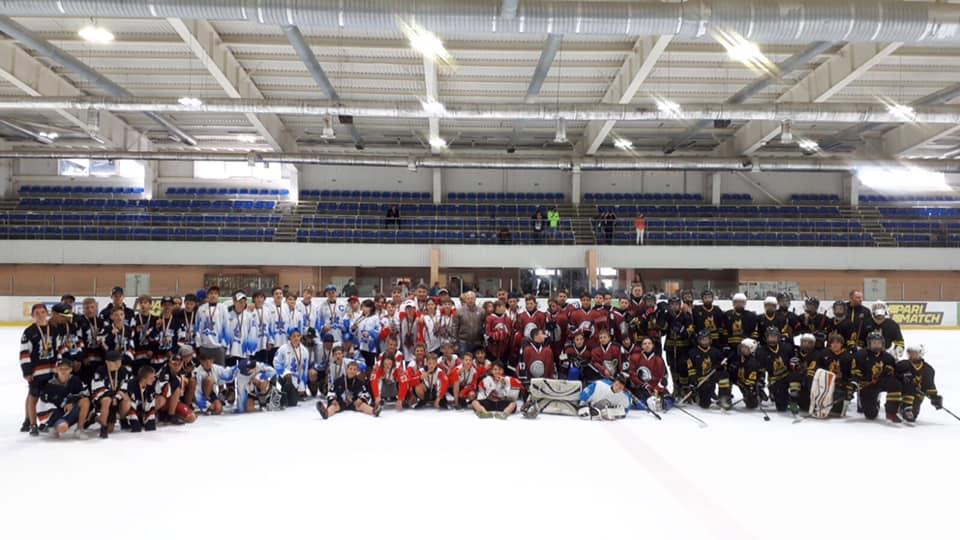
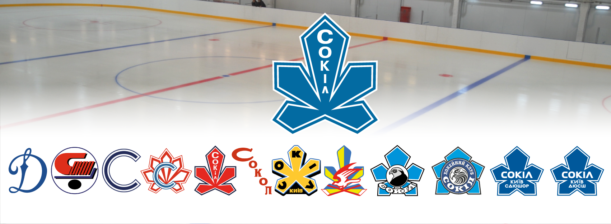
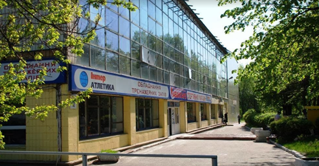

s
Project
СОКІЛ КИЇВ
This page created by Dubinin Vladimir
Головна
Сокіл2008
Турніри
Чемпіонати
Title heading
Data: 05, november, 2020

Title heading2
Data: 05, november, 2020

Всі логотипи соколу, за всі роки
Title heading3
Data: 05, november, 2020

Хоккейна Арена